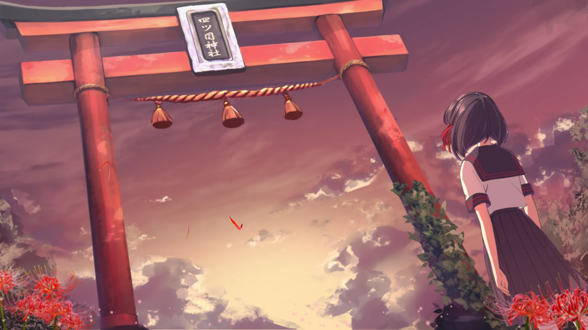
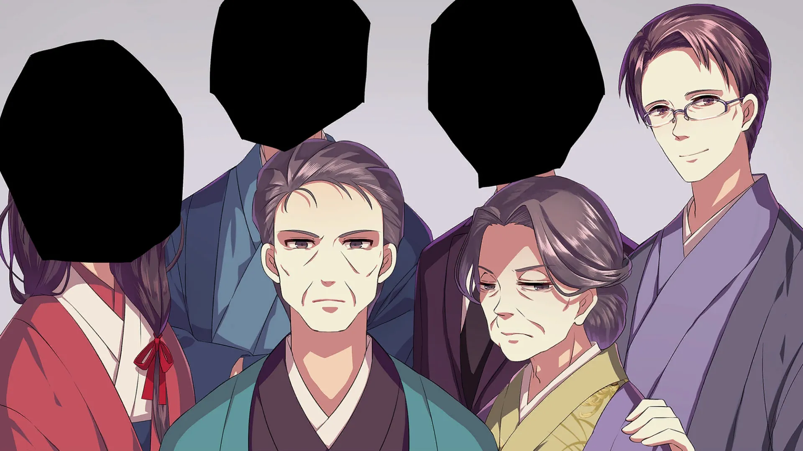
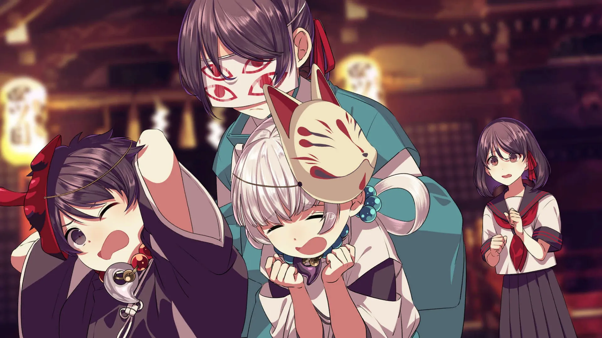
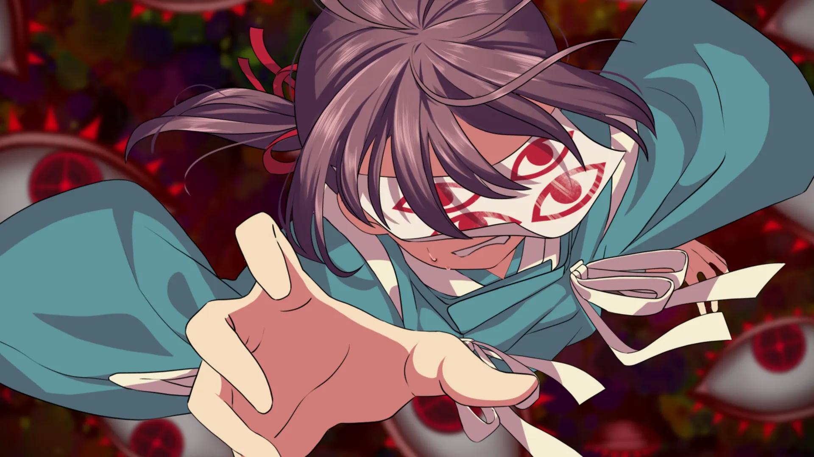
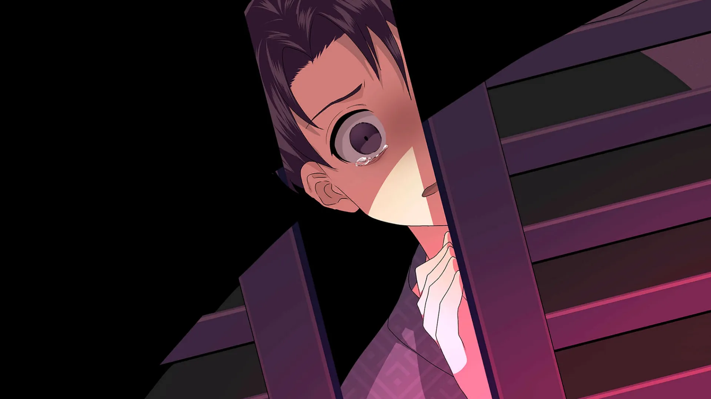
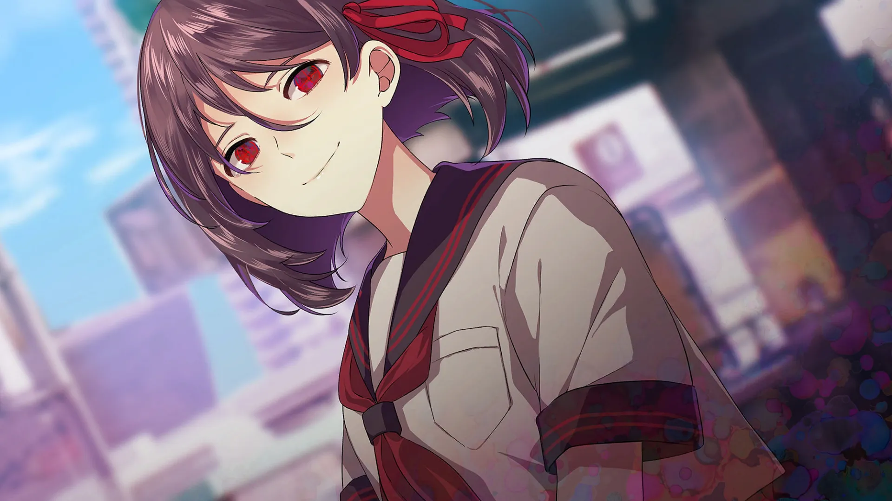
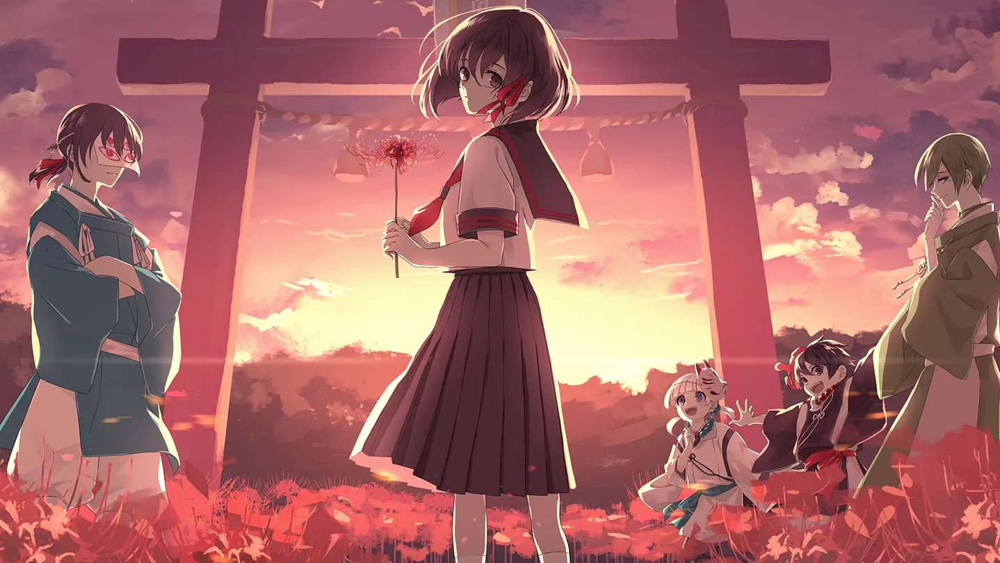
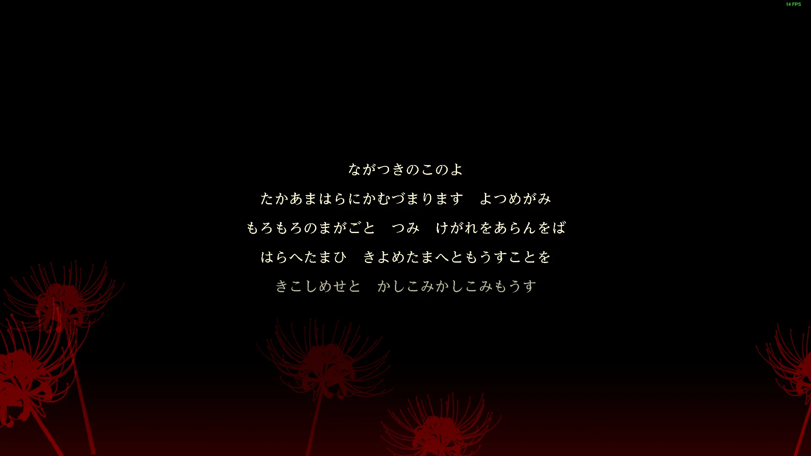
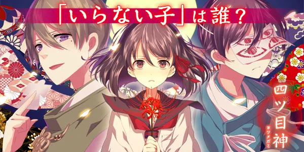

四目之神 -再會-：迷信背後的邪惡
作者：和風少女桐遠暮羽
單親家庭少女真依 跟隨父親回到了位於山中的老家四津村，在那裏有她所一直探求着的家庭和身世之謎的真相。

沒人要的孩子...會被四目之神...帶走喔...
| 資訊一覽 | |
|---|---|
| 開發商 | SEEC |
| 遊戲時長 | 7.5h |
| 類型 | 解謎 |
| 難度 | 前易後難 |
| 分級 | 全年齡 |
備註：
本作 四目之神 -再會- 是 SEEC 在 2016 年推出的手機遊戲 四目之神 的高清重製版，
畫面和系統的重製使得本作和 Galgame 十分接近。
沒錯，四目之神 是 Galgame！
故事
單親家庭少女 佐原真依，一直以來都和父親兩人一起生活。
幼時的她，時常詢問父親，「爲甚麼別人都有媽媽，就我沒有？」
然而 父親總是眉頭緊皺，不肯回答她。
隨着年齡增長，升入中學的真依，開始漸漸體會到父親也有其苦衷，
就不再向父親追問有關自己身世的事情了。
然而有一天，放學回家的真依在家門口看到 父親在和另外一個男人大聲爭吵，
男人見到真依，自稱是真依爸爸的哥哥，也就是真依的 伯伯。

回到家後，父親的臉色十分難看，但是 第一次見到其他親人的真依，
心中揮之不去的謎團越來越大。
「要回老家看看嗎？」父親詢問道。
第一次知道自己還有 老家 的存在的真依，欣然接受了提議，和父親踏上了旅途。
真依的老家「相良家」雖然地處邊遠的小山村，但是卻有個寬大的宅院，
踏入大門的時候，真依聽到了來自某人的呼喚：
「你終於來了...我的...真依...」
登场人物
本作的主角，是中學生，
和父親兩人一起生活在東京的公寓內。
似乎能看到或者聽到一些常人看不到的東西，
比如說幽靈。
在老家跟着神必的聲音召喚來到一個神社，
然後就回不去了。
屬於那種不含傲嬌成分的隨處可見的普通女生。
主角在神社裏遇到的少年，
他自稱自己是 imigo，一直生活在這裏。
脾氣很臭，經常口出狂言黑屁女主，
但是被問及神社的問題時卻故意隱瞞甚麼。
有傲嬌成分，，，
臉上蓋着一塊布，不知道是爲甚麼。
在神社裏遇到的男人，
長相英俊，自稱是神社的管理員，
還是 imigo 的 長輩，
和 imigo 兩個人一起盡力想辦法幫助女主逃出神社。
長得又帥，又不像 imigo 遮住臉，
身材又高，
說話又好聽，又不像忌子天天嘴臭，
又會照顧人，又不像忌子只會兇，，，
我擦，他中文名字怎麼寫，我不好說
其他人物
神社裏的兩個小鬼
女主的父親
女主的伯伯（跟父親吵架的人）
游戏 OP
Galgame 金曲: 🔗️神匿 -カミカクシ-
歌詞： 🔗️前往 Telegram 頻道
游戏 CG







遊戲畫面
一句話點評
最近那種新聞很多啊，什麼 女大學生被綁架到小山村，什麼 少女被販賣給山區光棍做老婆，
甚至還有轉賣二手三手的，被鎖鏈捆綁的，瘋掉的…
這就導致我對四目之神的小山村總是會產生某種既視感，
碰巧這個遊戲題材也是講述邊遠山區的某種邪惡，然後玩起來屬實令人不安。
偏題了，，，接下來講講給新玩家的推薦理由。
本作是一邊解謎一邊推進故事情節，逐步揭開真相的那種遊戲，
途中有多個分支和結局，根據你的操作，真依有可能虎口脫險，回歸平靜的日常，
也有可能打破砂鍋，不倦地逼近事件的真相；
或者是好不容易進入 Good End，卻轉眼間發現事情絕沒那麼簡單，
整個故事設計十分精彩，所以當時 SEEC 發布了這個重製版的時候，老玩家都是一片歡呼聲。
解謎有一定的難度，為了讓你能輕鬆地享受故事，遊戲中內置了攻略，
當你實在解不開時，就可以點一下攻略看看思路，如果還是不行，再點一次就能直接公開謎題答案，
避免了卡關的事情發生，體現了遊戲公司真心希望大家享受這個故事的良苦用心。
此外，遊戲還加入了舊作中所沒有的特別篇全新故事，為整個世界觀畫下了完美的句號。
最終謎題沒有答案，如果你實在解不開，請上網搜索或者去群裏提問，，，
我在本文末尾附加了一些花絮，希望大家都能喜歡 四目之神 -再會-。
還在猶豫是否下載？
这里有一个试玩录像
你可能會想找 BGM：🔗️古都に咲く花
還有一個別有韻味的鋼琴曲版本：🔗️前往 YouTube
資源和下載
Steam 商店爲官方多語言版，請考慮購買。
盜版：
我不建議你玩盜版，因爲這遊戲俄區三十多，阿根廷區才十幾，希望你能支持遊戲公司，
非要玩的話：
資源來自 Ryuugames：
https://www.ryuugames.com/eng-yotsume-god-reunion/
內含多種網盤下載，解壓密碼 ryuugames.com
mega: https://mega.nz/file/18cgiBwT#YwvhVpb2VbqW6SSj3Hxm1ojwhs3EFvt3inniQ96dOs4
注意：遊戲 ESC 鍵是直接退遊，不要隨便按，，，
遊戲中有卡片收集內容，有些藏得比較隱蔽，請在遊戲通關後參照這裏的指南進行收集。
https://h1g.jp/yotsume_remake/?%E3%82%AE%E3%83%A3%E3%83%A9%E3%83%AA%E3%83%BC%E3%82%AB%E3%83%BC%E3%83%89
花絮
遊戲開頭的一大段謎語是甚麼意思？

經過網上考察，我找到了：
・ながつき⇒長月（旧暦九月）
・このよ⇒この世（俗世間）
・たかあまはら⇒高天原（天上界）
・かむ⇒神（）
・づまり⇒留まり（いらっしゃる）
・よつめがみ⇒四ツ目神（このゲームの神様）
・もろもろ⇒諸々（いろんな）
・まがごと⇒禍事（悪いできごと）
・つみ けがれ⇒罪、穢れ（）
・あらんをば⇒有らんをば（あったとしたら）
・はらへたまひ⇒祓い賜え（取り去ってください）
・きよめたまへ⇒清め賜え（きれいにしてください）
・もうすこと⇒白すこと（申し上げること）
・きこしめせ⇒聞こしめせ（聞き届けてください）
・かしこみ⇒畏み（おそれおおいこと）
・もうす⇒白す（申し上げます）
考古學家請進：原版四目之神考古專區

先放下載地址：
日文版：上應用商店（Play 商店或者 AppStore）搜索 四ツ目神 即可（可能需要日區帳號）
https://play.google.com/store/apps/details?id=tokyo.seec.yotumegami
https://apps.apple.com/jp/app/sitsu-mu-shen-mi-jieki-tuo/id1120022246
中文版：上網搜索 手談漢化組 四目之神
先來看個遊戲 PV，裏面也有遊戲畫面和玩法的介紹（我插入了 YouTube 視頻，你可能需要翻牆）
你也可以複製這個視頻的連結：https://youtu.be/o3gW5HGMCXM
如你所見，舊作是豎屏手機遊戲，人物沒有配音，
但是當時我也玩得不亦樂乎，畢竟劇情有趣比甚麼都強。
然後重製版就變成了 Galgame，哈哈
原版玩的時候基本上免費，但是有體力限制，無法一下攻略太多的關卡，
但是可以充錢恢復體力。
來看一下遊戲介面。
要被 古都に咲く花 洗腦了嗎 :D
二次創作
我又來了我在 YouTube 上找到一個超棒的二創動畫，
作者親自演唱和作畫。
即將自動跳轉到 44 秒正片開始。
你也可以複製這個視頻的連結：https://youtu.be/Gz3cyDEwASc
对于原创内容，文章作者保留所有权利。转载需要许可，如有需要请前往 🔗️Galgame 频道 留言。
另外，复制链接自由，请随意分享。